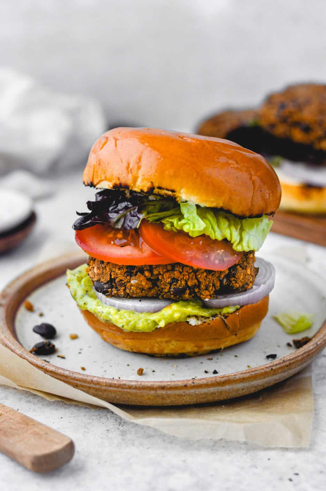

Black Bean Burger

Description
Black bean burgers are a fun, easy way to add some protein
to a vegan diet or to try expanding an omnivore diet as well.
This recipe from Hummus Sapien has a few steps and an hour to
get you to burger city.
Ingredients
- 2 tbsp ground flaxseed + 3 cups water
- 2-14.5 oz cans black beans, drained and rinsed
- 2 cup Panko breadcrumbs
- 2 tsp onion powder
- 1 tsp garlic powder
- 2 tsp cumin
- 2 tsp chili powder
- 1 tsp smoked paprika
- 1/2 tsp kosher salt
- 1/2 tsp ground black pepper
- 2 tbsp sriracha
- Oil/cooking spray
- Buns or bread of your choice
Steps
- Place flax and water in a small bowl. Set aside to thicken.
- Place beans in a large bowl. Mash with a potato masher or fork until most beans are broken up, leaving some whole beans in tact. Add breadcrumbs, onion powder, garlic powder, cumin, chili powder, smoked paprika, salt, pepper, sriracha, and flax mixture. Stir until well combined.
- Form into 6 tightly packed patties. You can refrigerate them until you are ready to cook or cook them right away.
- Warm a skillet over medium heat. Once hot, add a drizzle of oil. The oil is ready when a drop of water sizzles. Cook burgers for about 6 minutes per side, or until golden brown. If baking, bake at 350F on a parchment paper lined baking sheet for about 10-12 minutes per side.
- Serve on a bun with yummy toppings!